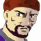

アベル 「あなたは、何が目的なんですか？ 僕たちの敵に回ったり、味方をしてみたり・・・」
アベル 「あなたは、何が目的なんですか？ 僕たちの敵に回ったり、味方をしてみたり・・・」
 ケネス 「知りたいか？ ボウズ。・・・じゃあ、教えてやるよ。もう一歩前に出な」
ケネス 「知りたいか？ ボウズ。・・・じゃあ、教えてやるよ。もう一歩前に出な」
ライフルの先を振って指示するサイファー。
アベル 「はい」
ケネス 「動くなよ」
ライフルがソードケインのコックピットにあてがわれる。
アベル 「な・・・ッ！？」
暗転する眼前。
その瞬間、サイファーのビームライフルが放たれ、ソードケインを貫いた。
タイトル
|
− Given truth − |
ナレーション 「宇宙移民者と地球の間に作られた和平は、そう、長くは続かなかった。時は宇宙世紀２５５年、１１月。セツルメント降下という忌まわしい事件を期に、体制派連合軍と反体制派バルバロイは全面戦争へと突入する。だが、多くの犠牲者を出したこの大戦の真相を知る者は、あまりにも少なかった」
ナレーション 「最重要航路に鎮座する要塞オケアノスを、奇しくもケネス達と協力することで攻略したアベル。だが、アベルに味方したケネスは、最後の最後でソードケインに向けて銃を放った」
撤退するエナ。撃たれたアベルの気配を感じる。
 エナ 「！？ アベル！？ ・・・まさか、ね」
エナ 「！？ アベル！？ ・・・まさか、ね」
要塞を抜け、宇宙空間へ出るエナ。要塞を取り囲む多数の機影を見つける。
エナ 「あらあら。海賊でもグレイゾンでもなさそうだけど・・・。このままじゃ、制圧も時間の問題ね」
 バーナバス 「味方・・・、じゃねェわな」
バーナバス 「味方・・・、じゃねェわな」
 パーチ 「見るからに、議会の援軍でもなければ、セグメントの助っ人って訳でもなさそうだ・・・」
パーチ 「見るからに、議会の援軍でもなければ、セグメントの助っ人って訳でもなさそうだ・・・」
バーナバス 「だったら、武力自体は知れてるな」
パーチ 「このエネルギーの残量と残弾数でか？」
バーナバス 「ハッ！？ 忘れてたぜ」
パーチ 「お前、本当にプロか？」
バーナバス 「うるせェな。・・・撤退するのか！？」
パーチ 「やりたきゃ、やれよ。俺は逃げる」
バーナバス 「ちっ！」
エナ 「あらやだ。またＧなの」
パーチ 「コイツ・・・。あの時の」
バーナバス 「なんだ！？ コイツぁ！？」
エナ 「遊んでる場合じゃないの。失礼するわね」
バーナバス 「逃がすかッ」
パーチ 「悪いけど、俺も逃げる」
バーナバス 「何なんだよッ！ ちッ！」
 キャロライン 「これは・・・、どう言うこと！？」
キャロライン 「これは・・・、どう言うこと！？」
 ＡＪ 「動いていたらしいな、予想外の第三勢力が」
ＡＪ 「動いていたらしいな、予想外の第三勢力が」
キャロライン 「これだけの艦を動かせる第三勢力なんて、何処に！」
ＡＪ 「ひとつだけあるさ。ユニオンＪに唯一対抗できるネットワーク・・・Ｒ商会」
キャロライン 「まさか！ Ｒ商会は軍備も国も持たない人海戦術のネットワークシステムに過ぎないわ！」
ＡＪ 「ユニオンＪだって、国も軍備も持ってない」
キャロライン 「じゃあＲ商会が、腰を上げて参戦してきたというの！？」
ＡＪ 「それはあるまい。あの艦を調べたところで、どうせ多国籍か無国籍の、無所属。Ｒ商会の声一つで動く宇宙海賊どもは、ごまんといるだろうさ。我々がユニオンＪの手駒に過ぎないようにね」
キャロライン 「ケネスたちは・・・、Ｒ商会と手を組んだと？」
ＡＪ 「彼の性分を考えれば、手を組んだとは考えにくい。オケアノス明け渡しと引き替えの取引だろうな。・・・何にせよ、我々が痛手を被ったことには違いない。イブレイの嫌味が聞こえるようだ」
 イヴリン 「帰って・・・こないわね。・・・このままじゃＭＩＡ認定、か」
イヴリン 「帰って・・・こないわね。・・・このままじゃＭＩＡ認定、か」
 シャヒーナ 「ＭＩＡ？」
シャヒーナ 「ＭＩＡ？」
イヴリン（小声で） 「missing in action・・・つまり戦闘中行方不明って事よ」
パーチ 「あの第三勢力がオケアノスを制圧したとするなら、アベルがそれに捕らえられた可能性もある。死んだとは限らないな」
イヴリン 「・・・パーチっ！」
 ユーニス 「死ん・・・！？ 無事よね！？ お兄ちゃんは無事よね！？ ねぇ！ イヴリンさん！」
ユーニス 「死ん・・・！？ 無事よね！？ お兄ちゃんは無事よね！？ ねぇ！ イヴリンさん！」
イヴリン 「そうね。この宙域を出るまでには、まだ時間に余裕があるわ。艦長も、ザカリアを捜索に出してくれてるし」
ユーニス 「うっ・・・うっうっ」
イヴリン 「大丈夫よ。アベルがすごいのは、ユーニスより知ってるから」
シャヒーナ 「捜索の打ち切り時間は？」
イヴリン 「出発までの２時間」
シャヒーナ 「探すには短いけど・・・、待つには長い時間ね」
 ボッシュ 「むぅ・・・、ケネスのヤツ、何処で道草食ってやがる。Ｒ商会のボスがお出ましだってのに」
ボッシュ 「むぅ・・・、ケネスのヤツ、何処で道草食ってやがる。Ｒ商会のボスがお出ましだってのに」
 クルー 「仕方ありませんよ。オケアノスが全面降伏したってのが信じられない乗組員だっているんです。現にまだあんなに戦闘の光が・・・」
クルー 「仕方ありませんよ。オケアノスが全面降伏したってのが信じられない乗組員だっているんです。現にまだあんなに戦闘の光が・・・」
ボッシュ 「っと・・・来たぜ」
 ルオ 「お前たちは待て」
ルオ 「お前たちは待て」

ジン 「ハッ」
ルオ 「私が一族の代理人として参上したルオ・ツォートンだ」
ボッシュ 「これは・・・、一族の後継者が、まだ冷めやらぬこんな戦場へ・・・」
ルオ 「我々は安楽椅子に鎮座するユニオンＪとは違う。民衆と共に生き、民衆とともに戦う」
ボッシュ 「とは言え、軍を持たないあなた方が、たったの一日でこれだけの艦を用意するとは・・・」
ルオ 「我々の力を侮らない事だ。我々は唯一、ユニオンＪを討ち取ることが可能な組織だ」
ボッシュ 「だからこそ、喧嘩はしない・・・。賢明な事だ」
ルオ 「民衆と共に生きる、と言っただろう。我々からすれば、ユニオンＪも民衆に過ぎない」
ボッシュ 「だが、奴らは利権をむさぼりすぎてる」
ルオ 「その通りだ。だから、我々が接収しなければならない」
ボッシュ 「あなた方の情報力なら、俺たちの目的もご存知だとは思いますが・・・」
ルオ 「わかっている。我々に利潤をもたらしてくれる以上、協力は惜しまないつもりだ」
ボッシュ 「たとえそれが、ユニオンＪを潰す事だとしても？」
ルオ 「お前たちが、奴ら以上の利益を我々に運ぶと言うのならばな」
ボッシュ 「そうでなければ、あんたたちは奴らと・・・」
ルオ 「場合によっては、ユニオンＪと組む事も視野に入れている、と言っておこう。今はその時期ではない」
ボッシュ 「ま。そうなっちまうまでは、仲良く頼みますよ」
ルオ 「そのつもりだ。オケアノスの制圧が残っているのでな、失礼する」
ボッシュ 「は・・・。あれがＲ商会首領の第七後継者、か」
クルー 「あんな穏やかな顔してても、さすがに、威圧感のある人でしたね」
ボッシュ 「宇宙に名だたるやくざ組織だぜ、無理もねえや」
ビームライフルに貫かれているソードケイン。
コックピットで驚愕するアベル。
アベル 「なッ！？」
ビームが消える。
アベル 「生き・・・て・・・る？」
ケネス 「悪いな」
アベル 「最小、出力・・・！？」
ケネス 「アベル！ エマージェンシーマニュアルからヘルプでＶＲを呼び出せ」
アベル 「な・・、ＶＲ・・・？」
ケネス 「ボイス・レコーダーだよ。呼び出して記録を再生しろ」
アベル 「えっ・・・な、なん？」
ケネス 「鈍いな、お前。今の攻撃でボイスレコーダーを破壊できたか確認しろって言ってンだよ」
アベル 「は・・・、はいっ」
操作をするアベル。だが、画面にアクセス不能の文字。
アベル 「あっ、あ、アクセス不可です」
ケネス 「よし。これでゆっくり話せる」
アベル 「今の攻撃は、録音阻止のため、・・・ですか」
ケネス 「あァ？ 当ッたり前だろ。そうでなきゃ、最大出力にしてるっての！」
アベル 「あなたはッ！ なんで！ いっつも！ そうやって！ いつもいつも！ 何にも説明してくれないんですかッ！」
ケネス 「うーるせえッ！ 説明したら信用しねーだろッ！」
アベル 「・・・そんな事ありませんよッ！」
ケネス 「今一瞬どもったろーがッ！」
アベル 「そっ、そんなコトっ」
ケネス 「サイファーとソードケインは開発の都合上、ほとんど構造が一緒なンだよ。まぁ、コックピット付近にあるのは、機内会話を録音してるから当たり前だがな」
アベル 「それにしたって・・・」
ケネス 「結果オーライだろ、文句言うなよ」
アベル 「・・・じゃあ、話してください。あなた方は何者なんですか？」
ケネス 「俺のコトを話すよりも、お前のいるグレイゾンについて話した方が早そうだな」
アベル 「いいですけど、ごまかすの、ナシですよ」
ケネス 「ぃちぃち・・・。まぁいい。このサイファーやお前のソードケインを作った会社がある。わかりやすく言えば、兵器会社だ・・・。そいつらは当然、兵器が売れれば儲かる。だが、兵器を売るためには需要が泣くちゃならない」
アベル 「・・・戦争？」
ケネス 「そうだ。・・・奴らは、兵器を売るために戦争を起こしてる。政治のバランスをコントロールして、な」
アベル 「そんな・・・」
ケネス 「話がデカすぎて信用できないか？ 奴らは誰にでも兵器を売る。エクレシアにも、セグメントにも、議会にもな。奴らは弱い方に強い武器を。強い方に弱い武器を売って、戦争を最も好ましい膠着状態にする」
アベル 「それじゃ、まさか、その・・・、強い武器・・・って」
ケネス 「ああ。俺たちの乗ってる、コレだよ」

アイキャッチ「Ｇ−ＧＵＩＬＴＹ」
アベル 「そんな、そんなのって！」
ケネス 「わかるか？ お前は戦争を終わらせるつもりで、戦争を大きくしたんだ」
アベル 「僕が・・・！？ 僕がですか！？」
ケネス 「真実を知ったところでどうするか、信用するかしないかは、お前が決めろ。絶対に信じないってのなら、今ここで俺がもう一度引き鉄を引いてもイイな」
アベル 「そんなの、簡単に・・・、僕は・・・、僕は・・・」
ケネス 「ま。判断材料が少なすぎるだろ。今は戻れ。艦に戻ったら、Ｂクラス以上のコンピュータからフィルタリング解除を掛けろ。以前のままならパスワードは、HAR MEGIDDO。ハル・メギドだ」
アベル 「メギドの丘・・・、ですか」
ケネス 「戻っても気を弛めるなよ。ボイスレコーダーの破壊が完璧じゃなければ、撃つまでの会話は録音されてる。真実を知ったことが連中に知れたら、オオゴトだぜ」
アベル 「みんなが、僕の事を・・・騙してるって言うんですか？」
ケネス 「さあな。俺がお前を騙してるかも知れねェな。・・・戻って、自分の眼で真実を確かめてこい」
アベル 「確かめて、あなたが嘘をついていたのなら、次に会うときは逃げないで下さい。僕が撃たれるにしろ、もう、先延ばしはイヤです」
ケネス 「Ｏ．Ｋ．じゃあ、こうしよう。次に会った時、お前が俺のコックピットに銃口をあてがってから、答を聞く」
アベル 「・・・行きます」
要塞の外で、まだ降伏していない敵機が襲いかかってくる。
アベル 「もう、要塞は落ちたんです！ 降伏してください！」
アベル 「戦いは終わったんですよ！ なんで前に出てくるんですか！？」
ボッシュ 「あのマシン、桁外れに強いな・・・」
クルー 「マシンだけじゃないですよ、パイロットも普通じゃありません」
ボッシュ 「こうして見ると、あんなのと対等に戦えるケネスが、いかに尋常じゃないかって事を痛感させられる」
クルー 「・・・ですね。狼と羊の群れですよ、アレじゃ・・・」
ボッシュ 「狼にしちゃ、生肉はお好みじゃないらしい」
クルー 「ッ・・・！？ コックピットを外してる！？」
アベル 「邪魔、しないで！」
アベル 「もうエネルギー残量がないんだから！ コックピットを撃ちますよ！？」
アベル 「分からず屋！」
アベル 「僕にはまだ、確かめなきゃならないコトがあるんだ！」
アベル 「オデッセイアは、まだ、僕の帰る所なんだ！」
ボッシュ 「かーっ・・・。恐ろしい腕前だな」
ケネス 「いヨ〜っス」
ボッシュ 「遅いぞ」
ケネス 「第２ブリッヂでジンに会ったぜ。連れてた男は何者だぃ？ 可愛い顔して、おっかねえの」
ボッシュ 「会ったのか。Ｒ商会の跡取りだよ」
ケネス 「ふぅん。道理で」
 イブレイ 「まだ、アベル君が帰還していないそうだな。より深層部にいたはずのザカリアはもう戻ってる」
イブレイ 「まだ、アベル君が帰還していないそうだな。より深層部にいたはずのザカリアはもう戻ってる」
ＡＪ 「あの子に限っては、そうそう落とされることはあるまい」
イブレイ 「大した自信だ。・・・とても、オケアノス破壊に失敗した男の態度とは思えん」
ＡＪ 「お前は才能ある男だが、最大の欠点は人の失敗に寛容になれない点だな」
イブレイ 「部下の失敗には寛容なつもりだ。それで、どう責任を取るつもりだ？」
ＡＪ 「ホセにでも誰にでも、好きに報告するがいい。少なくとも現時点ではお前は私の補佐官に過ぎん」
キャロライン 「失礼します、長官。ソードケイン、帰還しました」
イブレイ 「ふン。持ち駒まで失う事態は避けられたな」
 ジーン 「おう、遅かったじゃねーか、ボウズ。さすがに落とされたかと思ったぜ」
ジーン 「おう、遅かったじゃねーか、ボウズ。さすがに落とされたかと思ったぜ」
アベル 「ちょっと・・・、その・・・、バーニアの調子がおかしくて、なかなか戦闘区域から出られなかったんです」
ジーン 「お〜ぉお〜ぉ、危ねェな。コックピットの際をビームが貫通してるじゃねェか」
アベル 「し、シールドで防ぎきれなくて・・・」
ジーン 「はぁン。天才少年を手こずらせるヤツってのもいるモンだな」
アベル 「そんな・・・。色々、壊れてると思いますけど、整備、お願いしますね」
ジーン 「おうよ。任しとけ。お前さんはゆっくりと休みな」
アベル 「はい。報告が終わったら、食事して休みます」
ジーン 「よぉく食って、よーく寝ろよ！」
ジーン 「んん〜。なんだこりゃ？ ビームがど真っ直ぐに貫通？ 冗談だろ？ ソードケインの装甲は樹脂発泡体だぜ・・・。こんな破壊のされ方・・・。アベルが無抵抗だったってのか？」
ジーン 「と・・・。ん？ バーニアは問題ないな。どう言うことだ？ ・・・ＶＲ？ まるでコイツを狙って撃ったみてェな・・・」
食堂。
イヴリン 「お疲れさま。さすがに心配したわよ」
アベル 「すみません」
ユーニス 「お兄ちゃん！ 無事で良かった！」
アベル 「だ、大丈夫だよ、ユーニス」
ユーニス 「だって！ だって！」
パーチ 「俺の勝ちだな」
バーナバス 「かーッ！ またかよ。アベルぅ！ お前は何でもう少し道草を・・・」
ユーニス 「バーナバスさんが！ お兄ちゃんが帰ってこないって！」
バーナバス 「違う！ 違うぞアベル！ 俺ァただ、ＭＩＡ認定までは帰ってこないって言っただけで、お前が無事じゃないなんて事は少〜しも・・・」
アベル 「わかってますよ。・・・落ち着いて、ユーニス。僕は無事だから。そ、そうだ。僕のご飯、取ってきてよ。お腹減ってるんだ」
ユーニス 「あ・・・」
アベル 「ね」
ユーニス 「う、うん」
アベル 「や、やあ。ただいま」
シャヒーナ 「お帰りなさい。随分と遅かったのね」
アベル 「うん。色々あって・・・。あの、ここ、いい？」
シャヒーナ 「お好きに」
アベル 「・・・卵、食べないの？」
シャヒーナ 「あげるわ」
アベル 「その、・・・宗教上の？」
シャヒーナ 「いいえ。気持ち悪いの。命が一杯に詰まったものを食べてるみたいで」
アベル 「そ、そう」
シャヒーナ 「落ち着かないみたいね。作戦が失敗に終わったから？」
アベル 「まさか！ 要塞はエクレシアの手に渡ったんだよね？ 破壊するよりもいい結果だったじゃないか」
シャヒーナ 「ッ！？」
バーナバス 「・・・は」
パーチ 「手が止まってるぜ。バーナバス」
ユーニス 「お兄ちゃん！ 一杯持ってきたよ！」
シャヒーナ 「ご馳走さま」
アベル 「あ、待って！」
シャヒーナ 「悪いけど、ユーニスに嫉妬されるの」
アベル 「あ・・・うん」
ユーニス 「ねえ、お兄ちゃんってば！」
アベル 「あ、ああ」
バーナバス 「・・・ふンむ」
シャヒーナ（小声で） 「気を付けなさい。あんた、疑われてるわ」
アベル 「えっ？ なに？」
ユーニス 「もう！ お兄ちゃん！」
シャヒーナ 「・・・・・・」
ジーン 「よし、と。ＶＲの取り出し完了、と」
ジーン 「配線は完全に焼き切れてるが・・・、復元すりゃ、幾らかは再生できるな・・・」

ナレーション 「ついに、オケアノスの矢は放たれた。一瞬で艦隊を消し去る主砲の威力に青ざめるアベルたち。そして、アベルはついに、グレイゾンの真実に触れる・・・。 次回、『正義の在処』 Ｇの鼓動が、今、目覚める」